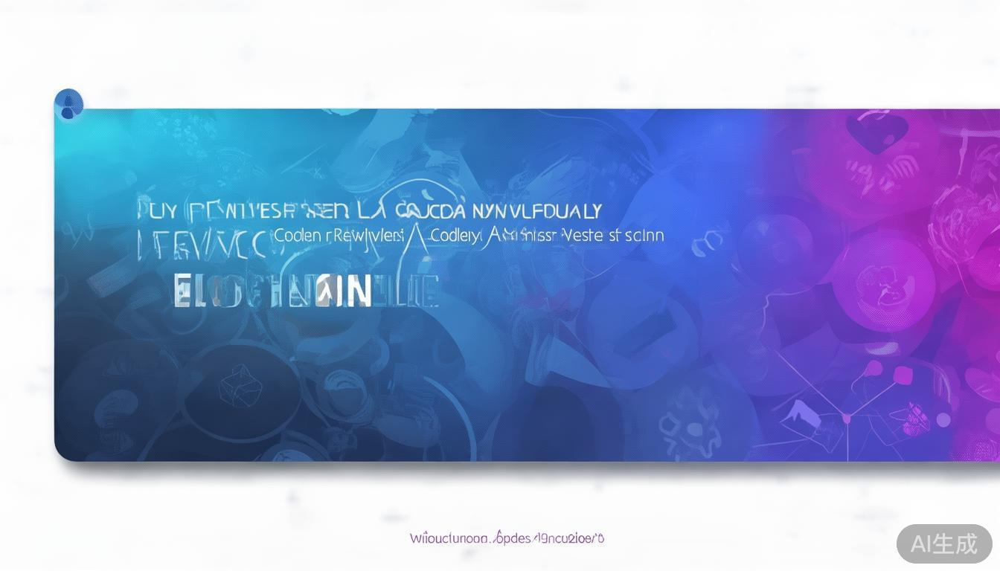

CodeReviewer 代码评审助手
10 号毕业设计：CodeReviewer 代码评审助手
日常开发中人工代码评审成本高、标准不统一、易漏过潜在缺陷与坏味道，本项目基于大语言模型搭建自动化代码评审助手，完成后可掌握LLM工具调用、静态分析集成、IDE/代码平台插件开发的全流程落地能力。
项目简介
《CodeReviewer 代码评审助手》是一款面向个人开发者与中小团队的轻量化AI代码审查工具，定位为本地优先、可扩展的评审辅助组件，支持对接本地代码文件、Git提交记录与GitHub/GitLab PR流程，结合静态代码分析规则与大语言模型的语义理解能力，自动识别语法错误、逻辑缺陷、安全漏洞、性能问题与不规范编码，输出可直接落地的重构建议与修复代码片段，无需重度接入企业级DevOps流程即可在本地快速运行，核心目标是降低代码评审的重复劳动成本，帮助开发者在提交代码前提前发现80%以上的常见问题。项目采用MIT开源协议，所有依赖均为开源组件，支持全本地部署避免代码泄露风险。
功能特性

- 多源代码接入：支持读取本地单个代码文件、Git diff提交片段、GitHub/GitLab PR变更内容，自动过滤非代码文件与自动生成的代码片段
- 多维度缺陷检测：覆盖语法错误、空指针/数组越界等逻辑风险、SQL注入/硬编码密钥等安全漏洞、循环嵌套过深/重复代码等性能与可维护性问题
- 规则+LLM双引擎评审：先通过静态分析工具做规则化快速扫描，再将问题上下文与代码片段传给大模型做语义层面的深度评审，减少大模型幻觉
- 结构化评审报告：输出按严重等级（阻断/严重/警告/建议）分类的问题列表，每个问题附带位置定位、问题原因、风险说明、可直接复制的修复代码片段
- 自定义规则配置：支持用户通过YAML文件配置团队专属编码规范、忽略文件列表、敏感词检测规则，适配不同技术栈的评审标准
- Git工作流集成：支持配置pre-commit钩子，在代码提交前自动触发评审，阻断高风险代码提交，也可生成Markdown格式的评审评论自动同步到PR页面
技术架构
| 组件 | 技术选型 | 作用 |
|---|---|---|
| 代码解析层 | GitPython、tree-sitter、PyYAML | 读取Git提交diff、解析多语言代码AST结构、加载用户自定义配置规则 |
| 静态扫描层 | Pylint（Python）、ESLint（JS/TS）、Bandit（安全扫描） | 基于成熟规则库做第一轮确定性问题扫描，输出结构化的规则类问题 |
| AI评审层 | LangChain、OpenAI API / Qwen-7B本地大模型、LangChain Expression Language | 拼接评审Prompt、管理大模型调用上下文、解析大模型返回的结构化评审结果 |
| 输出层 | Rich、Markdown、PyGitHub | 终端彩色可视化输出评审结果、生成Markdown格式报告、自动同步评论到GitHub PR |
| 交互层 | Typer | 实现命令行交互接口，支持多参数配置评审范围、严格等级、输出格式 |
架构说明：项目采用分层解耦设计，所有层之间通过标准化的代码片段数据结构传递信息，静态扫描层输出的问题会作为上下文传入AI评审层，避免大模型重复检测已知规则问题，同时降低幻觉概率；AI层支持切换云端API或本地开源大模型，满足代码不出内网的安全需求；输出层与交互层完全独立，后续可快速扩展VS Code插件、Web界面等交互入口，无需修改核心评审逻辑。
核心代码骨架
# core/reviewer.py 核心评审调度模块
import os
from langchain.prompts import ChatPromptTemplate
from langchain_core.output_parsers import JsonOutputParser
from core.static_scanner import StaticScanner
from core.code_loader import CodeLoader
from utils.prompt_templates import REVIEW_PROMPT
class CodeReviewer:
def __init__(self, llm, config_path="./config.yaml"):
self.llm = llm # 传入初始化好的大模型实例，支持云端/本地模型切换
self.code_loader = CodeLoader(config_path) # 代码加载器，负责读取不同来源的代码
self.static_scanner = StaticScanner(config_path) # 静态扫描器，执行规则类检测
self.output_parser = JsonOutputParser() # 结构化解析LLM返回的JSON结果
# 构建评审Prompt链，注入静态扫描结果作为上下文
self.prompt = ChatPromptTemplate.from_template(REVIEW_PROMPT)
self.chain = self.prompt | self.llm | self.output_parser
def review(self, target_path: str, review_type: str = "file"):
"""核心评审入口，支持file/diff/pr三种评审类型"""
# 1. 加载目标代码片段与元信息（文件路径、语言、变更行范围）
code_segments = self.code_loader.load(target_path, review_type)
all_issues = []
for seg in code_segments:
# 2. 先执行静态扫描，拿到规则类问题
static_issues = self.static_scanner.scan(seg)
# 3. 拼接上下文调用大模型做深度评审
ai_result = self.chain.invoke({
"language": seg.language,
"code": seg.content,
"static_issues": [i.dict() for i in static_issues],
"format_instructions": self.output_parser.get_format_instructions()
})
# 4. 合并去重问题，添加位置元信息
all_issues.extend(self._merge_issues(static_issues, ai_result, seg))
# 5. 按严重等级排序后返回
return sorted(all_issues, key=lambda x: {"阻断":0, "严重":1, "警告":2, "建议":3}[x.severity])运行步骤
- 环境准备：安装Python 3.10+与Git，执行
pip install virtualenv && virtualenv venv创建虚拟环境，Windows执行venv\Scripts\activate、Mac/Linux执行source venv/bin/activate激活环境。 - 安装依赖：执行
pip install gitpython tree-sitter pylint eslint bandit langchain langchain-openai rich typer pyyaml pygithub安装所有依赖库，若使用本地大模型额外执行pip install vllm。 - 配置文件：在项目根目录创建
config.yaml，配置大模型密钥（若用Qwen本地模型则配置本地模型路径）、需要忽略的文件/目录、团队自定义编码规则，默认配置可直接从项目示例模板复制。 - 初始化静态扫描规则：执行
python -m eslint --init初始化JS/TS扫描规则，执行bandit -i更新安全漏洞规则库，确保静态扫描组件可正常运行。 - 本地文件评审测试：执行
python main.py review --path ./test_demo/bad_code.py --type file，查看终端输出的结构化评审结果，验证缺陷检测与建议生成是否正常。 - Git提交钩子配置：执行
python main.py install-hook在当前Git仓库安装pre-commit钩子，后续执行git commit时会自动评审本次提交的diff内容，若存在阻断级问题会阻止提交。 - PR评审测试：在config.yaml中配置GitHub Token与仓库地址，执行
python main.py review --pr 123 --type pr，即可自动拉取PR#123的变更内容评审，并将结果作为评论发布到PR页面。
扩展思路
- IDE插件扩展：基于现有核心评审逻辑，开发VS Code插件，实现编码过程中实时评审，在问题代码行直接显示波浪线提示与修复建议，点击即可一键应用修复代码。
- 评审知识库增强：收集团队历史评审记录与线上故障代码案例，构建向量知识库，在评审时通过RAG召回相似历史问题，给出更贴合团队实际场景的评审建议，减少通用化的无效建议。
- 多轮评审修复闭环：增加自动修复模块，针对评审出的问题自动生成修复后的完整代码，支持用户确认后直接写入文件，同时执行单元测试验证修复正确性，形成“检测-修复-验证”的完整闭环。
- 多语言支持增强：补充Go、Rust、Java等语言的静态扫描规则集成，针对不同语言的最佳实践优化专属Prompt，提升多语言场景下的评审准确率，支持微服务多语言仓库的统一评审。
小结与练习
核心收获
- 掌握了LLM应用的分层设计思路，理解了“规则引擎+大模型”双模式如何平衡准确率与灵活性，有效降低大模型幻觉问题，避免纯LLM方案的不确定性。
- 掌握了代码类工具的核心开发逻辑，包括Git操作、AST解析、静态分析工具集成、多源数据接入的通用方法，可迁移到其他开发类AI工具的开发中。
- 掌握了LangChain链式调用、结构化输出、Prompt工程的实战技巧，学会如何通过工程化手段让大模型输出符合预期的结构化结果，而非零散的自然语言。
动手练习
- 改造现有代码，新增对Go语言的静态扫描支持：集成golangci-lint工具，在静态扫描层增加Go语言的扫描逻辑，调整Prompt让大模型能识别Go语言的特有问题（如goroutine泄漏、err未处理等），用示例Go坏代码测试评审效果。
- 新增评审报告导出功能：在输出层扩展Excel导出能力，将所有评审结果按严重等级、文件路径、问题类型分类导出为Excel表格，支持统计每次评审的问题数量、类型分布，方便团队做代码质量趋势分析。
本项目为本站 自学路线「毕业设计」板块原创教学项目，由 AI 生成原型并整理，以官方文档与真实开源生态为准。 技术栈均基于公开、主流的开源库（如 Transformers / LangChain / FastAPI / SQLite 等），可对照各库官方仓库核验。 如引用第三方开源项目，请遵循其原始许可证（MIT / Apache-2.0 / BSD 等）；本项目内容可按 MIT 协议自由使用，标注出处即可。